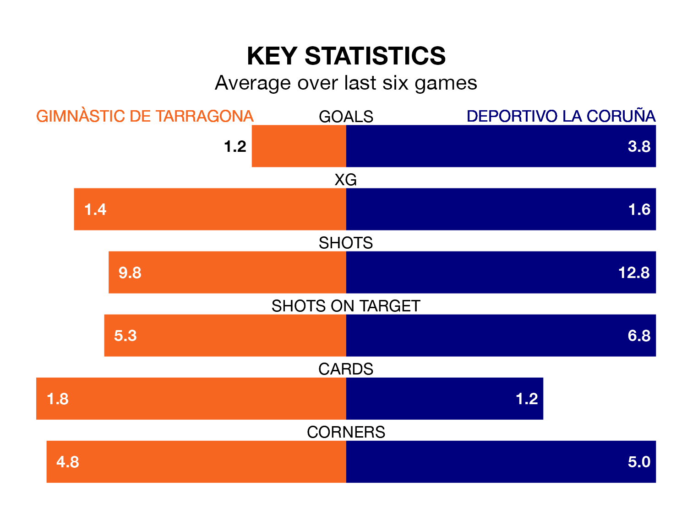

Primera Division RFEF Group 1's top two sides face each other at Nou Estadi de Tarragona in Sunday's early kick-off, when second-placed Gimnàstic de Tarragona host Deportivo La Coruña.
Gimnàstic de Tarragona have picked up 14 wins and seven draws from 26 games so far this season, and sit one point below the visitors going into the 11am match.
Deportivo La Coruña, meanwhile, have won 14 and drawn eight, picking up 50 points.
Gimnàstic de Tarragona are in reasonable form in Primera Division RFEF Group 1, with three wins and two draws from their last six games.
With six wins and no losses over that period, Deportivo La Coruña's form is much better – they have taken 18 points from 18, compared to the home side's 11.
With 45 goals in 26 games so far this season, the visitors are the league's second-highest scorers with 1.7 goals per game. And they are conceding fewer than average, letting in 20 goals at a rate of 0.8 per game.
Gimnàstic de Tarragona are also above average scorers, with 1.2 goals per game, compared to a league average of 1.0. They have conceded 0.6 goals per game.
In Alberto Varó Lara, Gimnàstic de Tarragona can rely on one of the league's safest pair of hands. He has kept 12 clean sheets in his 20 appearances this season, and only one other 'keeper – Cultural y Deportiva Leonesa's Miguel Bañuz Antón – has been able to prevent the opposition scoring on more occasions in Primera Division RFEF Group 1.
In Deportivo La Coruña's net, Germán Parreño Boix has six clean sheets in 19 games.
Gimnàstic de Tarragona's last match was on March 2, a 1-0 win against Arenteiro, with Marc Fernández Gràcia getting the goal for Gimnàstic de Tarragona.
Deportivo La Coruña beat CD Lugo 4-1 last time out, on Sunday, with Antonio David Álvarez Rey, David Mella Boullón, Hugo José Rama Calviño and Lucas Perez on the scoresheet.
Updated: 09:34 (UTC), 08/03/24